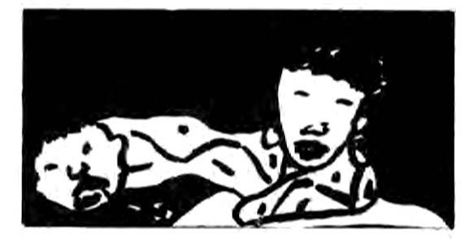

by Stanley Krippner and Jeffrey Hooper
In recent years, there has been an increase in the attention paid to shamanism, both on an academic and on a popular level. Of special interest is the emphasis shamans place upon dreams, both in their "election" to the shamanistic profession and on the part of the clients they are called upon to assist.
Shamans are men and women who appear to be able to voluntarily alter their consciousness in order to enter a purported "non-ordinary reality," supposedly obtaining knowledge and power that can be used to help or to heal members of their community. The term "non-ordinary reality" describes the shamanic "other world" from a contemporary viewpoint, a world often accessible through dreams and other alterations in consciousness.
In the myths of many primitive cultures, there are accounts of three cosmic zones - earth, heaven, and the underworld - and the ease by which people could traverse them. For example, there was no rigid division between wakefulness and dreams; people could create from their dreams actions in the waking world (Halifax, 1982, p. 81). After the "fall" of humankind, due to some type of sin, arrogance, or violation of sacred rules, the bridge connecting the three worlds collapsed; travel between the zones became the sole privilege of deities, spirits, and shamans. The early myths often tell of an "original shaman," chosen by the gods, and capable of insurmountable powers. They were said to have been capable of levitation, flying, and bodily transformation. These incredible feats were rarely obtainable by later shamans, again because human behavior evoked divine displeasure (Eliade, 1964).
Receiving the Call
Contemporary shamans enter their vocations in several ways - e.g., through hereditary transmission, through recovery from an illness mediated by "spirits," during a "vision quest," in an initiatory dream. In Okinawa, spirits notify the elect through visions and dreams; most of the recipients attempt to ignore the call, but it persists (Lebra, 1969). Most shamanic traditions hold that refusal to follow the spirit notification will result in illness, insanity, or even death. Among the Inuit Eskimos, one is called through dreaming about spirits. The dreamer is then possessed by an animal spirit which compels him to withdraw from society and to wander naked. Eventually, the initiate gains control over the spirit and celebrates his victory by making a drum (Oswalt, 1967). Dreams of dead relatives are held to mark one's call to shamanism among the Wintu and Shasta tribes of California (Park, 1938). Among the Southern Valley Yokuts of California, shamanic power may come, unsought, in dreams or from a deliberate quest (Wallace, 1978). In California's Dieguenos and Luisenos tribes, future shamans can be selected as early as nine years of age on the basis of their dreams (Almstadt, 1977). Among several other American Indian tribes, initiatory dreams contain such birds and animals as bears, deer, eagles, and owls. The dream creature instructs the dreamer to take its power and begin shamanic training (Rogers, 1982).
One of us (S.K.) interviewed a Zulu "sangoma" (shaman) in 1981. She discussed her election to the profession, a call which involved an initiating illness:
Many years ago, I fell ill with seizures. The missionary doctors said it was epilepsy but they couldn't help me. I went to the sangomas to find out what was wrong with me and they said I had been possessed by an ancestral spirit. One night this spirit led me to a large pool of water where a python emerged and surrounded me. It was not a real snake, but my grandfather. 'Was it a dream? It was either a dream or a trance. But my seizures stopped and I began training to become a sangoma.

The training period for apprentice shamans varies in length but typically lasts for several years. Usually, the apprentice will learn from master shamans, who teach them nomenclature (e.g., the names of the spirits and their functions), history (e.g., the genealogy of the tribe), technology (e.g., rituals, music dances), data concerning medicinal and sacred herbs, dream interpretation techniques, and tribal mythology. The apprentice also learns from his or her guardian and helping spirits.
Ruth Benedict (1983) has observed that shamanism characteristically focuses on spirits (of the dead, of nature, or of minor deities). In many tribes, shamans will have a guardian spirit which usually takes the form of a bird or animal. This spirit protects them as they enter potentially dangerous altered states of consciousness; it also travels with them as they ascend or descend to the other worlds (Harner, 1981). In addition, shamans typically employ a number of helping spirits, especially in divination and healing.
The training period is sometimes quite brief. Traditionally, the Washo initiate (of Nevada and California) would receive his power through a dream, and would be awakened by a whistle. He would follow the whistle, and it would change to a whisper which would instruct him - e.g., to bathe for four successive mornings and treat a sick person on four successive nights. If that client recovered from the illness, the initiate's status as a shaman would be confirmed (Rogers, 1982).
Dreams and Illness
Peru's Cashinahua Indian shamans "pursue dreams," believing that the more dreams they have each night, the greater their power will become. Other individuals in the society may want to reduce the number of dreams they have because it is held that dreaming interferes with skill in hunting. They request an herbalist to give them medicines that will "calm the dream spirits" (Kensinger, 1974). Zambian shamans often derive their powers of diagnosis in dreams, claiming that they can give an accurate description of the illness without questioning or examining the client (Frankenberg and Leeson, 1976). Among the Iroquois, it was believed that unfulfilled "natural desires" were known by means of dreams. These dreams were able to provide clues to the shaman as to what could be done to restore a client's health by meeting his or her needs in a manner consistent with the tribe's social structure (Wallace, 1958).

Many tribes held that dreams represented the soul's nocturnal voyage, and some believed that, at those times, it was vulnerable to abduction by a witch, sorcerer, or malevolent spirit. In such cases, it is necessary for the shaman to search for and retrieve the soul, often engaging in fierce supernatural battles along the way (Eliade, 1964). The Northwest Coast Indians of North America use "soul catchers" (carved bones) for this purpose; many shamans make images of dough and roll them over the client's body (Rogers, 1982). For the Tarahumara Indians, unpleasant dreams are the most common cause of illness, bringing on pains, cold, and diarrhea (Spier, 1933). Dreams are also held to be a primary cause among the Paviotso; children can become ill if their parents' dreams are unfavorable or if bad dreams are dreamed by visitors in the house. Shamanic interpretation is called for in either event to halt the effect (Park, 1938).
In many societies, an important function of the shaman is dream interpretation. The Taulipang shamans of the Caribbean are experts on tribal mythology; they also are considered experts in explaining their own dreams and those of others (Rogers, 1982). Australian aboriginal shamans move into "Dreamtime" with great facility to assist the hunting activities of their societies (Halifax,1982).
Because shamans spend so much time in "non-ordinary reality," it used to be hypothesized that they suffered from some type of schizophrenia. However, Bryce Boyer (1962) conducted in-depth interviews and administered the Rorschach to Apache shamans, finding some evidence for hysteria but none for schizophrenia. Indeed, the preoccupation with bodily reactions and emotional excitability is often an important aspect of shamanism (Eliade, 1964). Boyer also observed that the shaman's responses indicated a higher degree of imagination than other tribal members who had also been administered Rorschachs; however, the shamans demonstrated considerable contact with external reality as well. Mircea Eliade (1964) adds that shamans demonstrate certain behaviors such as "hallucinations" and "seizures" that suggest, to some, schizophrenic and epileptic symptomology. Yet shamans differ in their ability to bring on these experiences voluntarily. Further, they have achieved a degree of concentration beyond the ability of the collective. They can sustain exhausting efforts during healing rites which sometimes last for several days. They manifest physical prowess and self-regulation of bodily functions. They have mastered a complex body of knowledge, through instruction and direct experience, and are able to apply this to individual situations in an appropriate manner. Michael Harner (1981) has commented:
The basic techniques of shamans are... similar in different parts of the world... This indicates that they are not, in fact, engaging in fantasy, because fantasy would be nearly limitless in the possible systems conceivable.
In conclusion, dreams are typically an integral part of shamanism. Knud Rasmussen, the Arctic explorer, is said to have inquired of an Eskimo acquaintance if he was an "angakok" (shaman). The man responded that he never had been ill nor had ever recalled dreams; therefore, he could not possibly be an angakok (Halifax, 1982). This sentiment is echoed, in one way or another, by inhabitants of other tribal societies. It is apparent that shamans represent not only the oldest profession, but the original professional practitioner endowed with the responsibility to understand dreams - their own and those of their clients.
Stanley Krippner is the Director for Consciousness Studies at Saybrook Institute in San Francisco, and the author or coauthor of several books and many articles concerning dreams and parapsychology. Jeffrey Hooper is a work-study scholar at Esalen Institute who has recently returned from a field trip in Nepal.